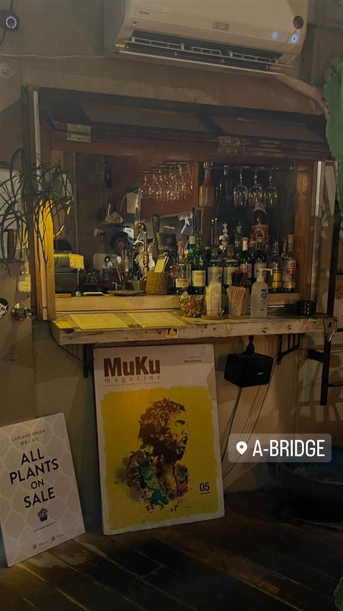

a-bridge 三軒茶屋店
屋上の隠れ家で、ギャラリーやDJイベントも行うカフェバー
A-BRIDGE
2001年に中野新橋で生まれ、2004年に三軒茶屋へ移転したカフェバー。キャロットタワー向かいの雑居ビル屋上という隠れ家的立地で、ギャラリーやライブ・DJイベントも行う多面的な空間として親しまれている。
TRIVIA
豆知識
- 2001年に中野新橋で始まり2004年に三軒茶屋へ移転した
- 店内はギャラリーを兼ね、DJイベントも行われる
REVIEWS
世間の評判
3.43食べログ
屋上テラスの夜景と接客の評判
- 屋上テラス席からの夜景の美しさとおしゃれな雰囲気を評価する声が多い
- コーヒーやケーキ、本格的なカクテルの美味しさを評価する声が多い
- 落ち着いた店内の雰囲気やスタッフの接客が丁寧だという声もある
- 雑居ビルの中にあり店の場所がやや分かりにくいという指摘がある
NAVITIME・食べログ 口コミ12件
| 創業 | 2001年に中野新橋で創業、2004年に三軒茶屋へ移転してリニューアルオープン |
|---|---|
| 看板 | カクテル・ワイン・パスタなどのアラカルト |
| どこから | 23区の外れ・近郊 |
| 予算 | 昼 ¥1,000～¥1,999 夜 ¥1,000～¥1,999 |
| 場所 | 三軒茶屋駅 東京都世田谷区三軒茶屋2-14-12 |
| メモ | 三軒茶屋の三角地帯、キャロットタワー向かいの雑居ビル屋上にあるカフェバー。ギャラリーを併設し不定期にライブ・DJイベントを開催 |
食べたもの：バー店内
NEARBY
近い店・同じ系統の店
-
 ★
醤油・中華そば 三軒茶屋駅
めん和正（わしょう）
看板のない行列店、永福町大勝軒系の煮干し中華そば
昼 ～¥999 夜 ～¥999
★
醤油・中華そば 三軒茶屋駅
めん和正（わしょう）
看板のない行列店、永福町大勝軒系の煮干し中華そば
昼 ～¥999 夜 ～¥999
-
 ★
醤油・中華そば 三軒茶屋
らーめん・わんたん ゆう輝屋
たんたん亭に連なる系譜の透き通った醤油ワンタン麺
昼 ¥1,000～¥1,999 夜 ¥1,000～¥1,999
★
醤油・中華そば 三軒茶屋
らーめん・わんたん ゆう輝屋
たんたん亭に連なる系譜の透き通った醤油ワンタン麺
昼 ¥1,000～¥1,999 夜 ¥1,000～¥1,999
-
 パスタ 三軒茶屋駅
トラットリア ピッツェリア ラルテ（Trattoria e Pizzeria L'ARTE）
ビブグルマン掲載、ピザ百名店4度選出のVPN認定ナポリピッツァ
昼 ¥3,000～¥3,999 夜 ¥8,000～¥9,999
パスタ 三軒茶屋駅
トラットリア ピッツェリア ラルテ（Trattoria e Pizzeria L'ARTE）
ビブグルマン掲載、ピザ百名店4度選出のVPN認定ナポリピッツァ
昼 ¥3,000～¥3,999 夜 ¥8,000～¥9,999
-
 天ぷら・天丼 三軒茶屋
てんぷら横丁 わばる 三軒茶屋店
薄衣でサクサクの江戸前串天ぷらを塩やソースで味変
昼 ～¥999 夜 ¥2,000～¥2,999
天ぷら・天丼 三軒茶屋
てんぷら横丁 わばる 三軒茶屋店
薄衣でサクサクの江戸前串天ぷらを塩やソースで味変
昼 ～¥999 夜 ¥2,000～¥2,999
-
 お好み焼き・もんじゃ 三軒茶屋
緒駕多（おがた）
自由が丘で5年修行した店主の、京都仕込みの出汁とソース
昼 ¥1,000～¥1,999 夜 ¥2,000～¥2,999
お好み焼き・もんじゃ 三軒茶屋
緒駕多（おがた）
自由が丘で5年修行した店主の、京都仕込みの出汁とソース
昼 ¥1,000～¥1,999 夜 ¥2,000～¥2,999
-
 喫茶店 三軒茶屋
MOON FACTORY COFFEE
京都の名店の姉妹店で味わう北海道美幌豆のハンドドリップ
昼 ¥1,000～¥1,999 夜 ¥1,000～¥1,999
喫茶店 三軒茶屋
MOON FACTORY COFFEE
京都の名店の姉妹店で味わう北海道美幌豆のハンドドリップ
昼 ¥1,000～¥1,999 夜 ¥1,000～¥1,999